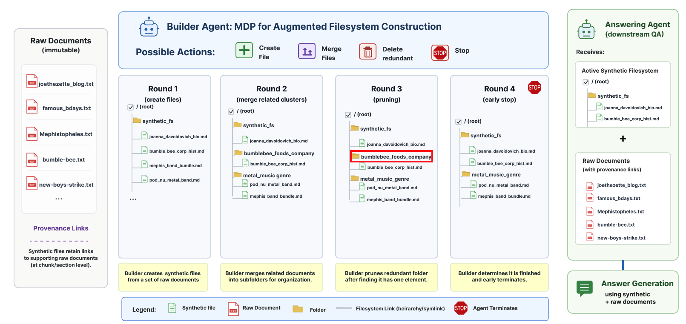
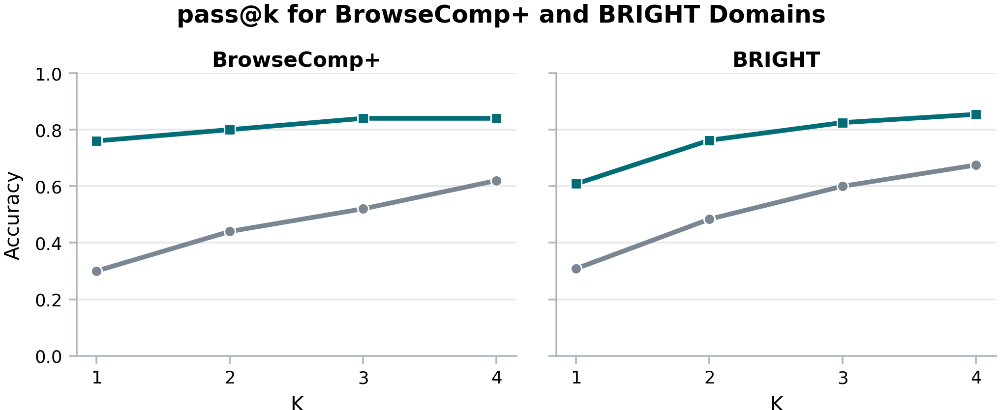
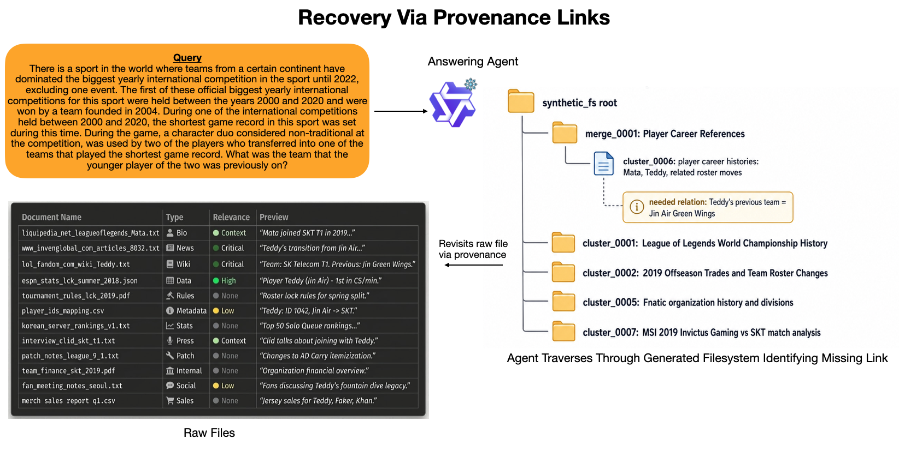
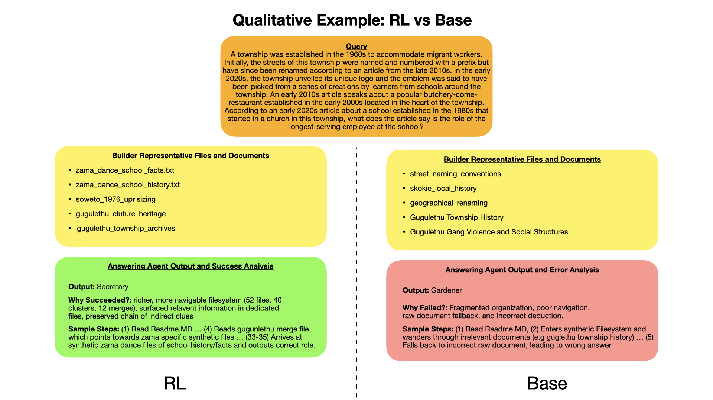
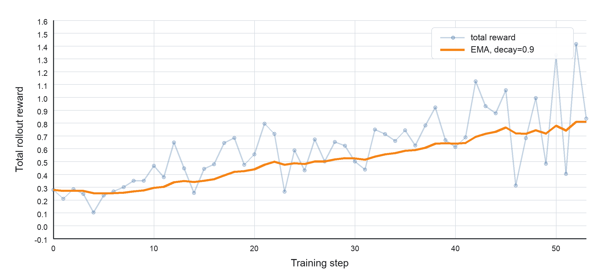

Create
Synthesize a new file from selected raw documents or existing synthetic files, retaining source links.
Anticipatory memory for long-context agents
Librarian Agents turn raw document corpora into reusable, provenance-linked filesystems before queries arrive, moving repeated retrieval work into an amortized construction phase.
Reasoning over long document contexts remains a challenge for large language models (LLMs). Standard retrieval methods are inherently reactive, bottlenecking agents with complex, cross-document reasoning at inference time. Existing approaches that pre-compute corpus structure, such as knowledge graphs, often fall short due to their reliance on rigid heuristics such as identifying interdocument relationships via named entity recognition. We propose an anticipatory approach to memory: proactively reorganizing unstructured document corpora to efficiently serve diverse future queries. This pre-computation synthesizes and restructures information within documents in advance, significantly improving an answering agent’s downstream performance and inference efficiency. While agentic scaffolds (e.g., Claude Code) are heavily trained to navigate and extend filesystems while solving the task currently in front of them, they do not pre-construct one in anticipation of future queries that our approach aims to do. We introduce Librarian Agents, a novel framework that restructures unstructured corpora into file-based memories arranged around the operations that LLM agents already perform well, such as reading summaries and following links. Librarian Agents is trained to maximize downstream success rate via end-to-end reinforcement learning. Empirically, Librarian Agents improves accuracy over the best performing baseline by 77% relative improvement on BrowseComp+ and additionally generalizes to out-of-distribution corpora such as BRIGHT.
Memory construction is modeled as a finite-horizon MDP. At each step, the builder observes the current filesystem, applies one discrete augmentation, and receives reward when that edit improves the expected success of a frozen answering agent after accounting for construction cost.

MDP definition. Raw documents remain immutable while the builder constructs an active synthetic filesystem over several rounds. It creates source-linked files, merges related artifacts into a hierarchy, deletes redundant synthetic files, and stops when the answer-facing memory is ready.
Synthesize a new file from selected raw documents or existing synthetic files, retaining source links.
Combine related synthetic files into a higher-level summary, index, or directory-like artifact.
Prune redundant or unhelpful synthetic files without removing raw documents from fallback access.
End construction and return the current filesystem as the reusable memory artifact.
The evaluation keeps answering agents frozen, so the gains reflect the quality of the constructed memory. Librarian Agents outperform reactive retrieval, reranking, GraphRAG-style precomputation, agentic RAG, autocompaction, and a builder without RL fine-tuning on BrowseComp+, then transfer zero-shot to BRIGHT.
| Answering Agent | Embedding | Rerank | GraphRAG | Agentic RAG | AutoComp. | No FT | RL Ours |
|---|---|---|---|---|---|---|---|
| Qwen3.5-4B, frozen | 0.42 | 0.44 | 0.26 | 0.44 | 0.02 | 0.25 | 0.75 |
| Gemini 3.1 Flash Lite | 0.30 | 0.42 | 0.36 | 0.42 | 0.04 | 0.28 | 0.77 |
The RL-trained builder is the only method to reach the mid-0.70s for both frozen answering agents. The no-fine-tuning ablation remains far behind, isolating the value of optimizing the builder policy.
| Method | Accuracy | Construction Tokens |
|---|---|---|
| GraphRAG | 0.36 | 11,923 |
| AutoCompaction | 0.04 | 501,637 |
| Librarian Agents | 0.77 | 178,926 |
Construction cost is paid once per corpus. Librarian Agents spend more upfront tokens than GraphRAG, but achieve much higher answer accuracy.
| Builder | Accuracy | Answer Tokens / Q | Files / Q |
|---|---|---|---|
| Base builder | 0.24 | 1,238 | 2.72 |
| Ours | 0.64 | 9,346 | 26.90 |
When the same constructed filesystem is reused across multiple questions, the trained builder reads a richer memory than the base builder and achieves substantially higher accuracy.
| Memory / Retrieval | StackExchange Avg. | Coding Avg. | Theorems Avg. | Overall Avg. | Cost / Query |
|---|---|---|---|---|---|
| Qwen3.5-4B builder | 0.282 | 0.387 | 0.296 | 0.303 | 920 |
| Librarian Agents | 0.663 | 0.644 | 0.475 | 0.613 | 8,109 |
The BrowseComp+-trained builder transfers to BRIGHT without task-specific training, improving across StackExchange, coding, and theorem-proving domains.
The qualitative results show why the aggregate gains are possible: the builder learns to cover more future queries, preserve fallback paths to raw evidence, and organize information in a form that an answering agent can traverse efficiently.

Pass@k. Additional builder samples improve coverage, but the RL-trained builder starts from a much stronger filesystem even at k=1. Its advantage persists on both BrowseComp+ and BRIGHT, suggesting that training learns a transferable strategy for arranging evidence rather than a one-off layout.
The pass@k trend reflects a central behavior of the builder: it creates breadth so more future queries are covered, while adding hierarchy so fine-grained questions can still be routed to specific evidence. The next examples show how that structure is used when the synthetic memory is helpful but incomplete.

Recovery through provenance. On a fine-grained BrowseComp+ query, the answering agent finds that the synthetic filesystem is missing a needed relation and follows provenance links back to a small set of raw files. The fallback path lets it verify details without enumerating the full corpus.
Provenance is useful only if the constructed filesystem gets the answerer close to the right part of the corpus. The qualitative comparison below isolates that construction step: the RL-trained builder produces a broader and more navigable workspace, while the base builder leaves the answerer with fragmented evidence.

RL vs. base construction. In the Zama township example, the RL-trained builder surfaces dedicated files for the school history and related township facts, allowing the answerer to reach the correct answer. The base builder leaves a more fragmented structure and falls back to the wrong evidence.
These behaviors are encouraged directly by the training objective. Each filesystem edit receives credit when it improves the answering agent's expected success, while unnecessary construction cost is penalized.

Training curve. During GRPO on BrowseComp+ training splits, cumulative dense rollout reward trends upward despite noisy individual rollouts. This is the intended signal: edits are rewarded when they improve downstream answer success after construction cost is included.
The current evaluation focuses on question answering over static corpora. Updating anticipatory memories as documents are added, edited, or removed remains open. Scaling to very large collections may also require pairing the builder with clustering or retrieval so construction does not require the full corpus in context.
Synthetic memory construction is still compression. A finite set of generated artifacts cannot anticipate every needle-in-a-haystack query, and over-compressed or hallucinated files could steer an answerer toward the wrong conclusion. Provenance links reduce this risk by preserving raw-document fallback paths, but answerers must still decide when to verify synthesized claims against source evidence.
@misc{singh2026librarianagents,
title = {Librarian Agents: Anticipatory Filesystem Construction via Reinforcement Learning},
author = {},
year = {2026}
}